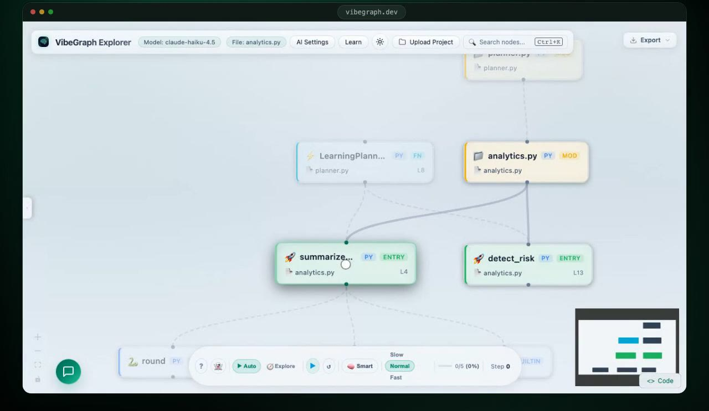
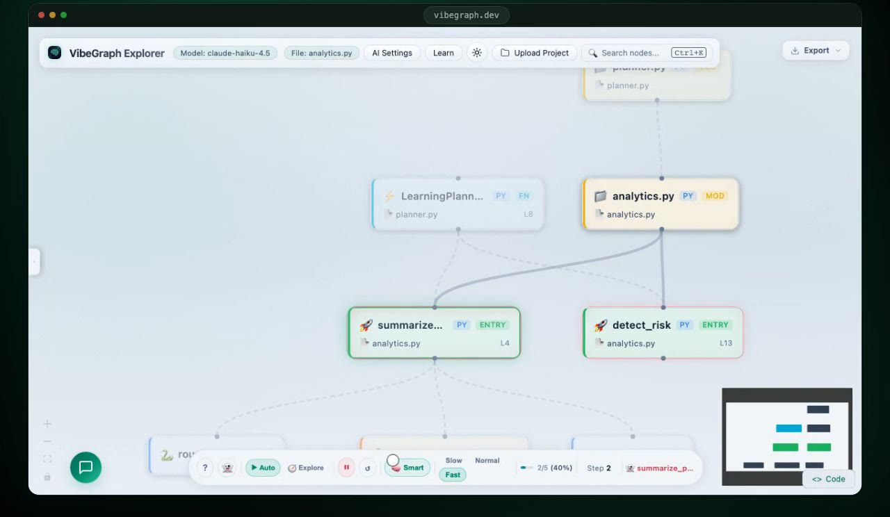

See the structure
Files, classes and functions become a call graph you can pan, zoom and search. Entry points and the functions they call stand out.
VibeGraph · case study
VibeGraph turns a Python, JavaScript or TypeScript project into an interactive call graph. Select any function for a plain-language explanation, ask follow-up questions with the real source as context, or follow a suggested reading order through the project.
What it does
Built for the moment you open a repository you did not write and need to know where to start.
Files, classes and functions become a call graph you can pan, zoom and search. Entry points and the functions they call stand out.
Select a node for an explanation at beginner, intermediate or advanced depth, in technical terms or as an analogy. The chat panel answers follow-up questions with that function’s source, callers and callees as context.
A learning path suggests which functions to read first. Ghost Runner walks through the graph one step at a time, with a short AI narration at each stop. Your code is never executed.


How it works
Each stage hands a simpler, more structured result to the next.
Add source files or a project .zip. Files are analysed in a temporary folder and cleaned up afterwards. There are no accounts and no database.
Each file goes to a language plugin: Python’s built-in ast module for Python, tree-sitter grammars for JavaScript and TypeScript. All plugins share one analyser interface.
Definitions and resolved calls become a NetworkX call graph, exported as the JSON that the React Flow view renders.
Selecting a node sends its source, plus caller and callee context, to a language model through OpenRouter. Answers stream into the panel.
A deterministic pass scores the graph, looking at entry points, public functions and highly connected hubs, to build a reading order. An optional AI pass may reorder only the first few steps, and the result is checked before it is shown.
What I built
VibeGraph is a personal project, built with the help of AI coding assistants. These are the design choices I would walk a reviewer through first.
Stack
Limits worth knowing: VibeGraph analyses code statically, so it shows how functions call each other but does not run or trace your program. Projects are added as files or a .zip; there is no GitHub import yet.